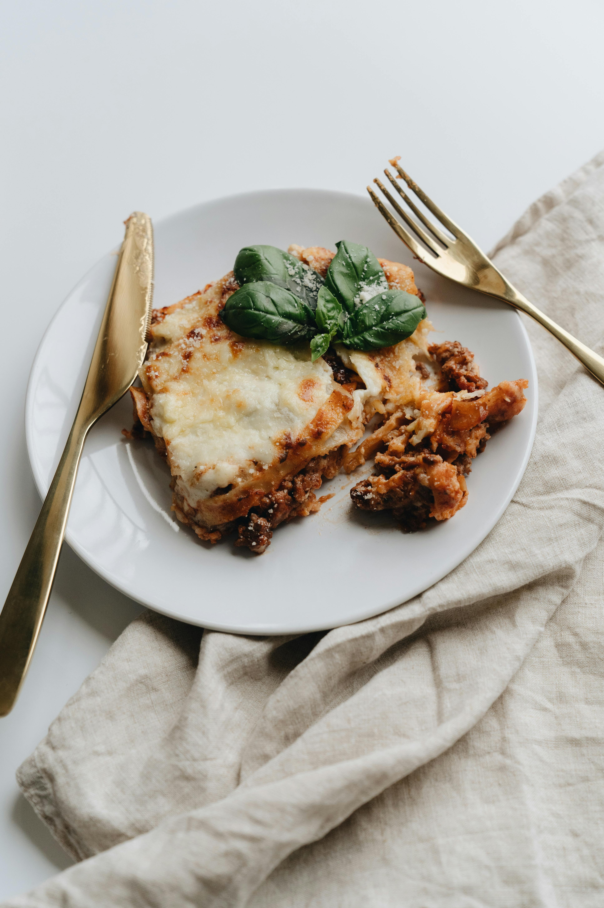

Description:
Lasagna is a classic Italian dish made with layers of wide pasta sheets, rich meat sauce, creamy béchamel, and melted cheese. It is a hearty and comforting meal that’s perfect for family dinners or special occasions.
Ingredients:
- 9 lasagna noodles
- 500g ground beef (or vegetables for a vegetarian version)
- 1 onion, chopped
- 2 cloves garlic, minced
- 2 cups tomato sauce
- 2 cups ricotta or béchamel sauce
- 2 cups shredded mozzarella cheese
- 1 tbsp olive oil
- Salt and pepper to taste
- Fresh basil for garnish
Steps:
- Preheat oven to 375°F (190°C). Cook lasagna noodles according to package instructions, then drain and set aside.
- In a large skillet, heat olive oil over medium heat. Add onion and garlic, cooking until softened.
- Add ground beef and cook until browned. Drain excess fat.
- Stir in tomato sauce and season with salt and pepper. Simmer for 10 minutes.
- Preheat oven to 375°F (190°C).
- Spread a thin layer of meat sauce in the bottom of a 9x13 inch baking dish.
- Layer lasagna noodles, meat sauce, ricotta or béchamel sauce, and mozzarella cheese.
- Repeat layers, ending with a layer of cheese on top.
- Bake for 30-35 minutes, or until the cheese is bubbly and golden.
- Let rest for 10 minutes before serving. Garnish with fresh basil if desired.
Enjoy your delicious homemade lasagna, perfect for a comforting meal!
Home